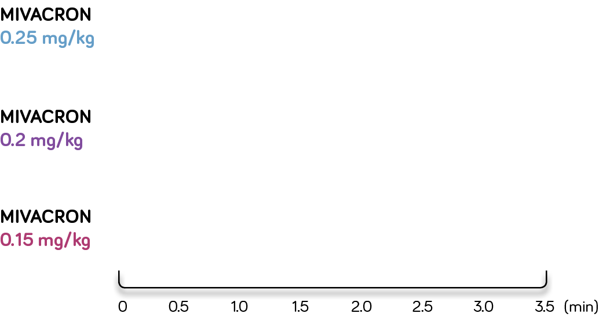

MIVACRON® (mivacurium chloride) injection PROVIDES GOOD-to-EXCELLENT INTUBATING CONDITIONS
WITHIN 1.5–3 MINUTES, DEPENDING ON THE DOSE1*,†

Time to generally good-to-excellent intubating conditions1

*Dosing range studied: 0.15 mg/kg (2.5–3 mins) to 0.25 mg/kg (1.5–2 mins)
†After completion of 0.15 mg/kg to 0.25 mg/kg dose
Please see accompanying full
Prescribing Information.


SAFETY CONSIDERATIONS